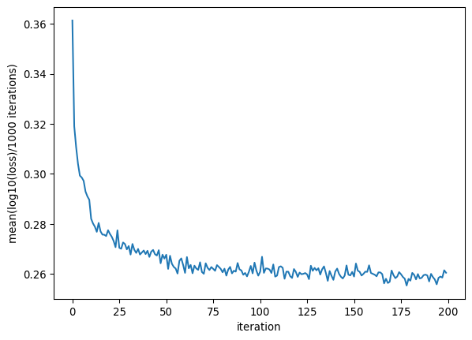

import torch
import torch.nn as nn
import torch.nn.functional as F
import matplotlib.pyplot as plt
import randomBuilding character-level ngram model suign wavenet architecture
Introduction
In this notebook, we will start using more complex architecture for neural networks. So far we were using an MLP, which has a sequential structure with input, and a non-linearity. From now on, we will start learning about other architectures such as wavenet, Recurrent neural networks, LSTMs, GRUs, Transformers, etc.
In this notebook, we will focus on:
Implementing the wavenet architecture, presented in the paper by van den Oord et al.. Wavenet was a paper published for audio data.
Combining custom modules with in-built pytorch modules.
Import libraries
Get the data and create data to index mapping dictionaries
with open("data/names.txt") as file:
words = file.read().splitlines()
file.close()
print(len(words))
print(max(len(w) for w in words))
print(min(len(w) for w in words))
print(words[:10])
# Build the vocabulary index
all_chs = sorted(list(set(''.join(words)))+['*'])
stoi = {s:i for i,s in enumerate(all_chs)}
itos = {i:s for s,i in stoi.items()}
vocab_size = len(all_chs)
print(itos)
print(vocab_size)55649
25
2
['mabeeshan', 'vinnavan', 'dhatchanya', 'tenuja', 'deysigan', 'gayal', 'neelanchal', 'vishayanth', 'sasvika', 'vighnaraaj']
{0: ' ', 1: '*', 2: '-', 3: '.', 4: 'a', 5: 'b', 6: 'c', 7: 'd', 8: 'e', 9: 'f', 10: 'g', 11: 'h', 12: 'i', 13: 'j', 14: 'k', 15: 'l', 16: 'm', 17: 'n', 18: 'o', 19: 'p', 20: 'q', 21: 'r', 22: 's', 23: 't', 24: 'u', 25: 'v', 26: 'w', 27: 'x', 28: 'y', 29: 'z'}
30Shuffle the words
random.seed(42)
random.shuffle(words)Build the dataset for the neural network
context_length = 8 # three caracters in context
def build_dataset(words):
X, Y = [], []
for word in words:
word = word+'*' # Add the end character
context = [stoi['*']]*context_length
for ch in word:
ix = stoi[ch]
X.append(context)
Y.append(ix)
context = context[1:] + [ix]
X = torch.tensor(X)
Y = torch.tensor(Y)
print(X.shape, Y.shape)
return X, Y
n1 = int(0.8*len(words))
n2 = int(0.9*len(words))
Xtr, Ytr = build_dataset(words[:n1])
Xdev, Ydev = build_dataset(words[n1:n2])
Xtest, Ytest = build_dataset(words[n2:])torch.Size([404721, 8]) torch.Size([404721])
torch.Size([50310, 8]) torch.Size([50310])
torch.Size([50661, 8]) torch.Size([50661])for x,y in zip(Xtr[:20], Ytr[:20]):
print(''.join(itos[ix.item()] for ix in x), '---->', itos[y.item()])******** ----> p
*******p ----> r
******pr ----> a
*****pra ----> s
****pras ----> h
***prash ----> a
**prasha ----> b
*prashab ----> d
prashabd ----> i
rashabdi ----> *
******** ----> r
*******r ----> e
******re ----> n
*****ren ----> j
****renj ----> i
***renji ----> t
**renjit ----> h
*renjith ----> *
******** ----> s
*******s ----> hSet some parameters
n_embed = 10
n_hidden = 100
mini_batch_size = 32
# context length and vocab size have been set earlierInitialization of the MLP neural net
I am going to use pytorch classes to build the model instead of own modules written in v4 of the file. Idea is to fuse bigrams sequentially as the network gets layer.
torch.manual_seed(42) # for reproducibility
model = nn.Sequential(
nn.Embedding(vocab_size, n_embed), nn.Flatten(),
nn.Linear(context_length*n_embed, n_hidden, bias = False), nn.BatchNorm1d(n_hidden), nn.Tanh(),
nn.Linear(n_hidden, vocab_size, bias = False), nn.BatchNorm1d(vocab_size)
)
for p in model.parameters():
p.requires_grad = True
print("total number of parameters:", sum(p.nelement() for p in model.parameters()))total number of parameters: 11560scratch code to understand how to build the wavenet architecture
torch.manual_seed(42) # for reproducibility
ix = torch.randint(0, Xtr.shape[0], (4,)) # look at a batch of 4 training examples
Xb, Yb = Xtr[ix], Ytr[ix]
logits = model(Xb)
print(Xb.shape) # we have 4 example with 8 characters in context_length
Xb, Ybtorch.Size([4, 8])(tensor([[ 1, 1, 1, 1, 1, 1, 1, 1],
[ 1, 1, 1, 14, 4, 21, 24, 17],
[ 1, 1, 1, 1, 19, 4, 7, 16],
[ 1, 1, 1, 1, 1, 1, 1, 1]]),
tensor([20, 4, 4, 6]))Look at the output of embedding layer
emb = model[0](Xb) # output of embedding layer
emb.shape # 4 examples, 8 characters, embedding size of 10torch.Size([4, 8, 10])Look at the output of flatten layer
xflat = model[1](emb)
xflat.shapetorch.Size([4, 80])Look at the output of Linear layer
x = model[2](xflat)
x.shapetorch.Size([4, 100])Play with the linear layer
- The matrix multiplication only works on the last dimension and all previous dimensions are treated as batch dimensions and left untouched.
# We can multiply 2-D tensor with the weigth matrix
print((torch.randn((4, 80)) @ torch.randn((80, 200)) + torch.randn(200)).shape)
# We can also multiply 3-D tensor or more with the weight matrix
print((torch.randn((4,5,80)) @ torch.randn((80, 200)) + torch.randn(200)).shape)
# We can also multiply 3-D tensor or more with the weight matrix
print((torch.randn((4,5,2,80)) @ torch.randn((80, 200)) + torch.randn(200)).shape)torch.Size([4, 200])
torch.Size([4, 5, 200])
torch.Size([4, 5, 2, 200])For wavenet, we do not want to flatten all 8 characters at once. Instead we want to group the characters 2 at a time. So we want to create a new “batch” of 4 in the first layer and process them all together. So we want to create a matrix of 32X4X20 and multiply that with a linear layer of dimension 20X200. Therefore, we need to change the flatten layer so it now outputs a tensor of size mini_batch_sizeX 4X 20
print((torch.rand((4, 4, 20)) @ torch.randn((20, 200)) + torch.randn(200)).shape)
# input of flatten layer is of dimension 4 X 8 X 10
e = torch.arange(320).view(4,8,10)
e
even_chs = e[:, ::2, :] # get all the even numbers from the second dimension
odd_chs = e[:, 1::2, :] # get all the odd numbers
out = torch.cat((even_chs, odd_chs), dim = 2)
print(out.shape)
# Another way to do the above
(e.view(4,4,20) == out).all()torch.Size([4, 4, 200])
torch.Size([4, 4, 20])tensor(True)Ok, so to do the above, we can define our own class FlattenConsecutive as follows:
class FlattenConsecutive(nn.Module):
def __init__(self, n):
super().__init__()
self.n = n # n = number of characters to flatten
def forward(self, x):
B, T, C = x.shape
#x = x.view(B,T//self.n ,self.n*C) # if I use a permute, .view raises error, so using .reshape
x = x.reshape(B,T//self.n ,self.n*C)
if (x.shape[1] == 1): # check shape after flattening
x = torch.squeeze(x, dim = 1)
# # permute the dimensions so that we can send the correct dimension input to BatchNorm1D module from torch.nn
# if len(x.shape) == 3:
# x = x.permute(0, 2, 1)
self.out = x
return self.out
# Define a custom Permute Module to fix input to BatchNorm1d layer
class Permute(nn.Module):
def __init__(self, *dims):
super().__init__()
self.dims = dims
def forward(self, x): # I can define either a __call__ function or a forward function
if len(self.dims) == 3:
x = torch.permute(x, self.dims)
else:
pass
self.out = x
return self.out
# x = torch.randn((4,4,20))
# permute = Permute(0,2,1)
# xp = permute(x)
# xpp = permute(xp)
# (xpp == x).all()Initialize the neural network with the wavenet architecture
torch.manual_seed(42) # for reproducibility
n_embed = 24
n_hidden = 128
n_merge = 2 # number of characters to merge
model = nn.Sequential(
nn.Embedding(vocab_size, n_embed), FlattenConsecutive(n = n_merge),
nn.Linear(n_merge*n_embed, n_hidden, bias = False), Permute(0,2,1), nn.BatchNorm1d(n_hidden), Permute(0,2,1), nn.Tanh(),
FlattenConsecutive(n = n_merge), nn.Linear(n_merge*n_hidden, n_hidden, bias = False), Permute(0,2,1), nn.BatchNorm1d(n_hidden), Permute(0,2,1), nn.Tanh(),
FlattenConsecutive(n= n_merge), nn.Linear(n_merge*n_hidden, n_hidden, bias = False), nn.BatchNorm1d(n_hidden), nn.Tanh(),
nn.Linear(n_hidden, vocab_size, bias = False), nn.BatchNorm1d(vocab_size)
)
# make last layer less confident
with torch.no_grad():
model[-1].weight *= 0.1
for p in model.parameters():
p.requires_grad = True
print("total number of parameters:", sum(p.nelement() for p in model.parameters()))
# #test the initialization
# x = Xb
# for module in model:
# x = module(x)
# print(f'{module.__class__.__name__}: {x.shape}')
# if isinstance(module, nn.BatchNorm1d):
# print(module.running_mean.shape)total number of parameters: 77068Train the model
max_iter = 200000
lossi = []
for i in range(max_iter):
# construct minibatch
ix = torch.randint(0, Xtr.shape[0], size = (mini_batch_size,))
#print(ix)
Xb, Yb = Xtr[ix], Ytr[ix]
# forward pass
logits = model(Xb)
loss = F.cross_entropy(logits, Yb)
# Backward pass
for p in model.parameters():
p.grad = None
loss.backward()
# update parameters
lr = 0.1
if i < 10000:
lr = lr
elif 10000 <= i < 50000:
lr = lr/10
else:
lr = lr/100 # step learning rate decay
for p in model.parameters():
p.data += -lr * p.grad
# collect statistics
lossi.append(loss.log10().item())
# track statistics
if i % 10000 == 0:
print(f'{i:7d}/{max_iter:7d}: {loss.item():.4f}')
# if i >= 9999:
# break
#break
print(loss.item()) 0/ 200000: 3.4048
10000/ 200000: 1.7587
20000/ 200000: 1.9912
30000/ 200000: 1.5520
40000/ 200000: 1.6193
50000/ 200000: 2.0577
60000/ 200000: 2.2085
70000/ 200000: 2.3347
80000/ 200000: 2.1680
90000/ 200000: 1.5836
100000/ 200000: 1.7380
110000/ 200000: 2.4456
120000/ 200000: 1.6216
130000/ 200000: 1.9041
140000/ 200000: 1.7886
150000/ 200000: 1.7403
160000/ 200000: 1.6349
170000/ 200000: 2.0079
180000/ 200000: 2.1133
190000/ 200000: 2.0363
2.0315334796905518Evaluate the model
plt.plot(torch.tensor([lossi]).view(-1, 1000).mean(dim = 1))
plt.ylabel("mean(log10(loss)/1000 iterations)")
plt.xlabel("iteration")Text(0.5, 0, 'iteration')
Put the model in evaluation mode.
model.eval() # Make sure to put the model in evaluation mode
eval_data_dict = {
"train": (Xtr, Ytr),
"val": (Xdev, Ydev),
"test": (Xtest, Ytest)
}
@torch.no_grad()
def calculate_split_loss(split):
x,y = eval_data_dict[split]
logits = model(x)
loss = F.cross_entropy(logits, y)
print(split, loss.item())
calculate_split_loss("train")
calculate_split_loss("val")train 1.7837618589401245
val 1.8179123401641846Record the performance
For wavenet architecture with n_embed = 10, n_hidden = 46, mini_batch_size = 32, n_merge = 2, context_length = 8, we get the following performance:
- Training loss = 1.877, Validation loss = 1.899
For wavenet architecture with n_embed = 24, n_hidden = 128, mini_batch_size = 32, n_merge = 2, context_length = 8, we get the following performance:
- Training loss = 1.781 , Validation loss = 1.826
Sample from the model
start_chr = "*"
for _ in range(20):
context = [stoi[start_chr]]*context_length
#out = [start_chr]*context_length
out = []
#print(context)
while True:
x = torch.tensor([context])
#print(x.shape)
logits = model(x)
#print(logits.shape)
probs = F.softmax(logits, dim = 1)
ind = torch.multinomial(probs, num_samples = 1, replacement = True).item()
if (ind == stoi[start_chr]):
out.append(itos[ind])
break
else:
out.append(itos[ind])
context = context[1:]+[ind]
#print(context)
print(''.join(out))haripozhini*
devsad*
pxodharikthi*
wuthigu*
shorika*
madhana*
rathisha*
levararan*
thurishi*
yuvaa*
ahind*
tmirthavaran*
visharathan*
shaanee*
kaji prishkurya*
givath.arasu*
anoraksh*
vinhayanani*
manasri*
ablavahan*Some notes:
Ideally, when we are training neural networks:
We should be tuning hyperparameters in a systemic way
We shouldn’t just look at the training loss, but at both the training and the validation loss.
We did not implement residual connections, skip connections and the more complicated linear layer architecture from the wavenet paper. We implemented only one part of it, which was combining characters slowly instead of all-at-once as we were doing in MLP.
Pytorch documentation is not great and can sometimes be incorrect. Do the best you can.
There is a lot of looking at shapes and making sure they work. It’s a good idea to prototype layers and implementations in a notebook to make sure that functionality is working correctly.
Typical deep-learning workflows are different - we have to setup experimental harness to tune our networks. Look at
Hands-on Machine Learning with Scikit-learn and Pytorch.